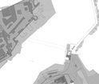

Tavola 14 - Tipologie e modalità d'intervento - Scala 1:500
Tavola 14/00 Tipologie e modalità d'intervento - Scala 1:500
Tavola 14/01 Tipologie e modalità d'intervento - Scala 1:500
Tavola 14/02 Tipologie e modalità d'intervento - Scala 1:500

Tavola 14/03 Tipologie e modalità d'intervento - Scala 1:500
Tavola 14/04 Tipologie e modalità d'intervento - Scala 1:500
Tavola 14/05 Tipologie e modalità d'intervento - Scala 1:500
Tavola 14/06 Tipologie e modalità d'intervento - Scala 1:500
Tavola 14/07 Tipologie e modalità d'intervento - Scala 1:500
Tavola 14/08 Tipologie e modalità d'intervento - Scala 1:500
Tavola 14/09 Tipologie e modalità d'intervento - Scala 1:500
Tavola 14/10 Tipologie e modalità d'intervento - Scala 1:500
Tavola 14/11 Tipologie e modalità d'intervento - Scala 1:500
Tavola 14/12 Tipologie e modalità d'intervento - Scala 1:500
Tavola 14/13 Tipologie e modalità d'intervento - Scala 1:500
Tavola 14/14 Tipologie e modalità d'intervento - Scala 1:500
Tavola 14/15 Tipologie e modalità d'intervento - Scala 1:500
Tavola 14/16 Tipologie e modalità d'intervento - Scala 1:500
Elenco completo di tutti gli elaboarti del Centro Storico Palermo
")